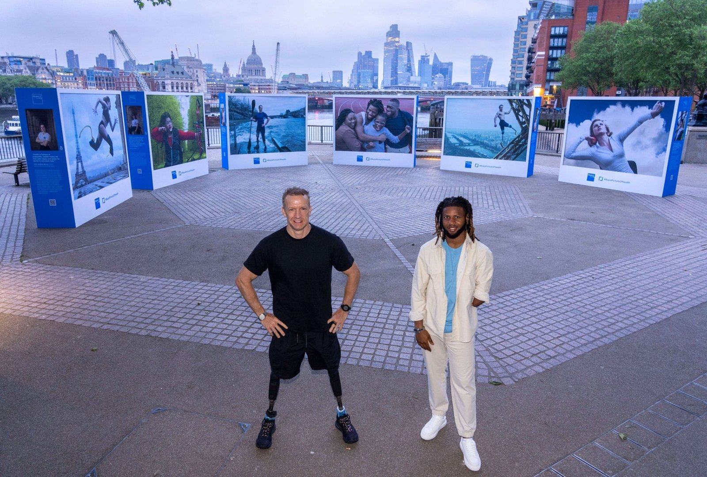

Promoting the agency's work on Bupa's Picture of Health campaign, and helping stand up its South Bank exhibition.

Bupa was one of the client relationships held at PrettyGreen, where the role covered long-term marketing strategy, social media planning, paid ad campaigns and content creation, consulting on marketing strategy for client teams.
Promoted the agency's work on Bupa's Picture of Health campaign and helped set up the South Bank exhibition — Annie Leibovitz portraits of Paralympic and Para athletes ahead of Paris 2024 — including capturing content on-site at the experiential exhibition.
Bupa's Global Brand Director, Fiona Bosman, later joined the agency's own podcast to talk brand storytelling — hear that episode →